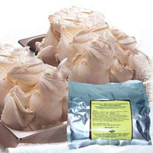
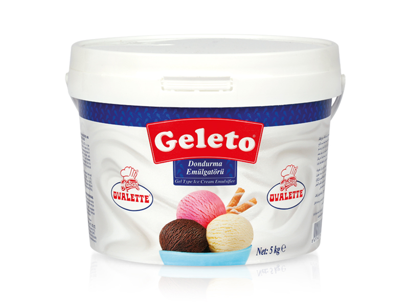

Как производят мороженное?
Стабилизаторы
Состав современного мороженого значительно отличается от состава любимого лакомства Александра Македонского. Сегодня ни одно мороженое не производится без стабилизаторов и эмульгаторов — эти пищевые добавки делают мороженое таким, каким мы привыкли его есть. Взять, к примеру, такую пищевую добавку, как гуаровая камедь. Несмотря на страшное название, она считается безобидной и даже полезной, поскольку не всасывается в кишечнике, контролирует аппетит и снижает уровень холестерина. Ее добывают из гуаровых бобов — стручков индийской акации, которую выращивают в основном в Индии и Пакистане. Если убрать из мороженого гуаровую камедь, вместо кремообразной консистенции и нежной структуры получится кусочек льда. Стабилизаторы позволяют сохранять запланированную форму мороженого, будь то рожок, торт или розочка.
Эмульгаторы
Эмульгаторы нужны для смешивания веществ, которые в силу своего молекулярного состава раствориться друг в друге не могут — например, жир и вода. Некоторые эмульгаторы производятся синтетическим путем. Они представляют собой химические соединения или природные вещества, подверженные химической и термической обработке. Однако такие добавки практически не используются из-за высокой стоимости — дешевле использовать натуральные вещества. Один из природных эмульгаторов, лицитин, содержится в яйцах и молочном жире. В продуктовой промышленности почти всегда употребляют соевый лицитин — Е322.
Красители
Один из самых популярных натуральных красителей — бета-каротин Е160b, делается из моркови и придает мороженому оранжевый цвет. Холодные десерты красного цвета, в основном, покрашены экстрактом свеклы, он маркируется как Е162. Синий цвет достигается при помощи водоросли под названием спирулина, обладающей ярким окрашивающим пигментом.

Производственный процесс
В пик сезона завод мороженого выпускает до 200 тонн продукта в сутки. Ингредиенты смешивают, разумеется, не вручную, а в специальном миксере. Производство автоматизировано, и весь процесс происходит в закрытых резервуарах. Контроль осуществляется из компьютерного центра, который по количеству мониторов и кнопок напоминает панель управления полетами. Чтобы приготовить мороженое, его сначала надо нагреть. Термическая обработка необходима для уничтожения вредных бактерий. После пастеризации наступает один из самых важных этапов производства — гомогенизация. Смесь подается в прибор и под большим давлением пропускается через узкое отверстие. В результате этого жировые шарики уменьшаются в несколько десятков раз, это помогает сделать смесь однородной. Процесс гомогенизации влияет на структуру и консистенцию будущего мороженого. После того, как смесь стала однородной, она должна “созреть”. Иными словами, нужно, чтобы сработали входящие в его состав стабилизаторы. Для этого будущее мороженое перекачивают в специальные цистерны и оставляют там на шесть часов при температуре 5°C.